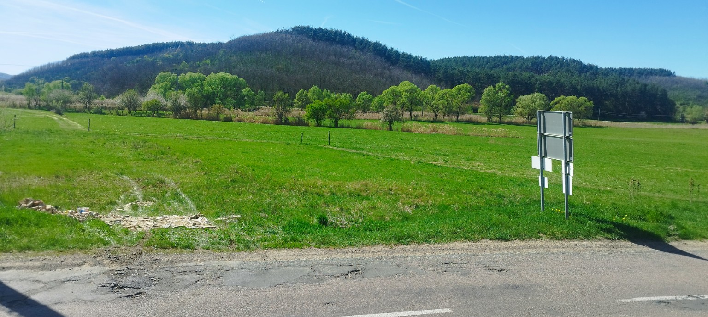
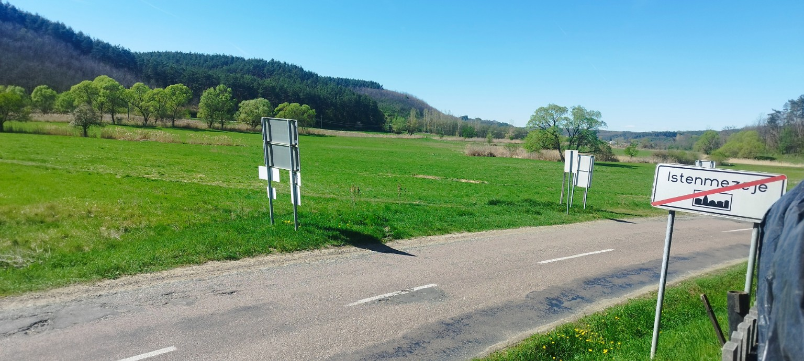
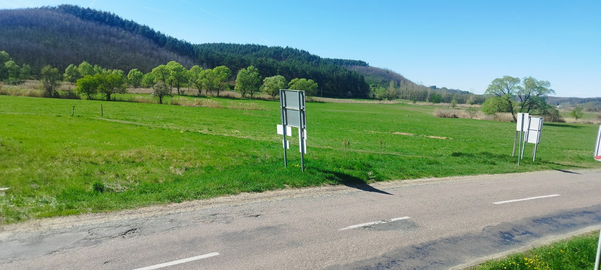
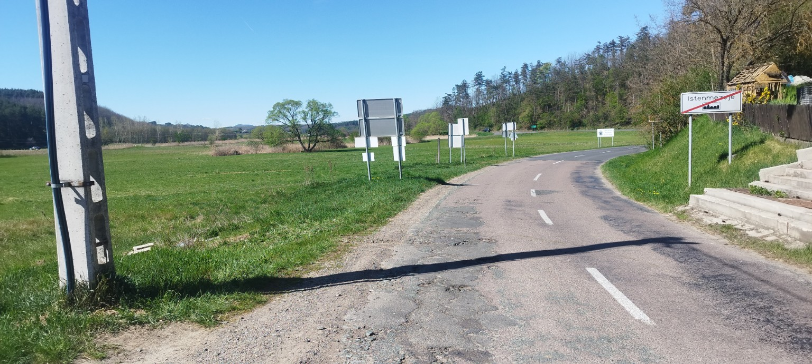
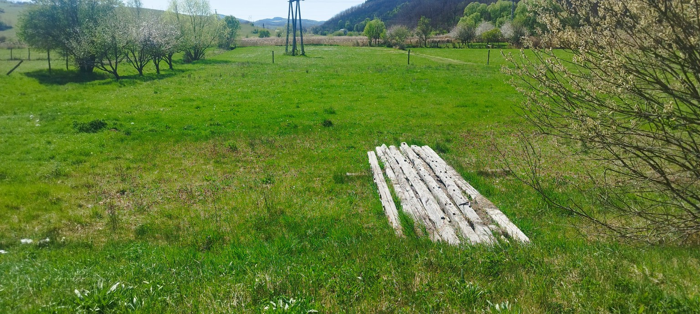
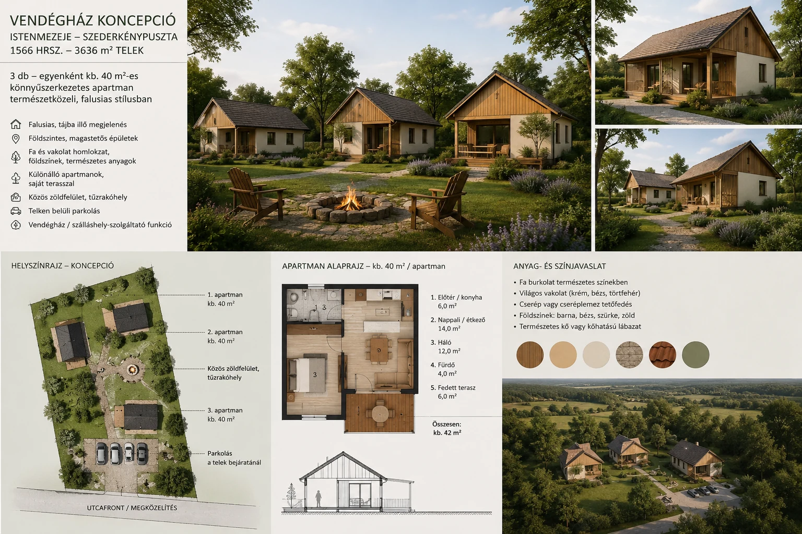

Gyors értékesítés miatt új, kedvező irányáron. Eladó Istenmezején, Szederkénypusztán, a házsor végén egy 3636 m²-es telek. A tulajdoni lap szerinti megnevezése kivett, beépítetlen terület, a megadott beépíthetőség 30%. A nagy telekméret és az 5 millió Ft alatti vételár miatt saját célra és befektetési szempontból is figyelemre méltó lehet.
Miért lehet érdekes?
A telek és környezete





Fejlesztési lehetőség – 3 vendégapartmanos előzetes koncepció
A telek turisztikai hasznosítása iránt korábban is volt érdeklődés. Ennek kapcsán készült egy előzetes, 3 apartmanos vendégház-koncepció, amely azt szemlélteti, hogyan lehetne a nagy telekméretet kis léptékű, természetközeli szálláshely-fejlesztéshez használni.
- 3 db, egyenként kb. 40 m²-es földszintes apartman
- különálló épületek, saját terasszal
- közös zöldfelület és pihenőkert
- telken belüli parkolás
- falusias, tájba illő építészeti karakter
Helyszín: Istenmezeje – Szederkénypuszta, belterület, 1566 hrsz.
Telekterület: 3636 m²
Beépíthetőség: 30%*

Telek elhelyezkedése

A térképi jelölés tájékoztató jellegű. A pontos telekhatárt és ingatlan-nyilvántartási adatokat a hivatalos dokumentumok alapján szükséges ellenőrizni. *A 30%-os beépíthetőség mellett a tényleges építési lehetőséget a HÉSZ, szabályozási terv, védőtávolságok, elő-/oldal-/hátsókert és egyéb előírások befolyásolhatják.
Fő adatok
English summary
Land for sale in Istenmezeje, Northern Hungary – 3,636 m² – HUF 4,990,000.
3,636 m² plot in Istenmezeje–Szederkénypuszta, at the end of the residential row. The land registry designation is “kivett, beépítetlen terület” (withdrawn / undeveloped land), with a stated 30% buildability. Direct sale by owner. Asking price below HUF 5 million, approximately HUF 1,372/m². A preliminary concept for three small guest apartments has also been prepared for the property; it is illustrative only and is not an approved building permit plan. Final building possibilities are subject to local zoning and other applicable regulations.
Asking price: HUF 4,990,000.
Érdeklődés / Contact
István Dancsó
Telefon / WhatsApp: +36 30 394 6121
E-mail: istvandancso68@gmail.com
Komoly érdeklődés esetén megtekintés egyeztethető.